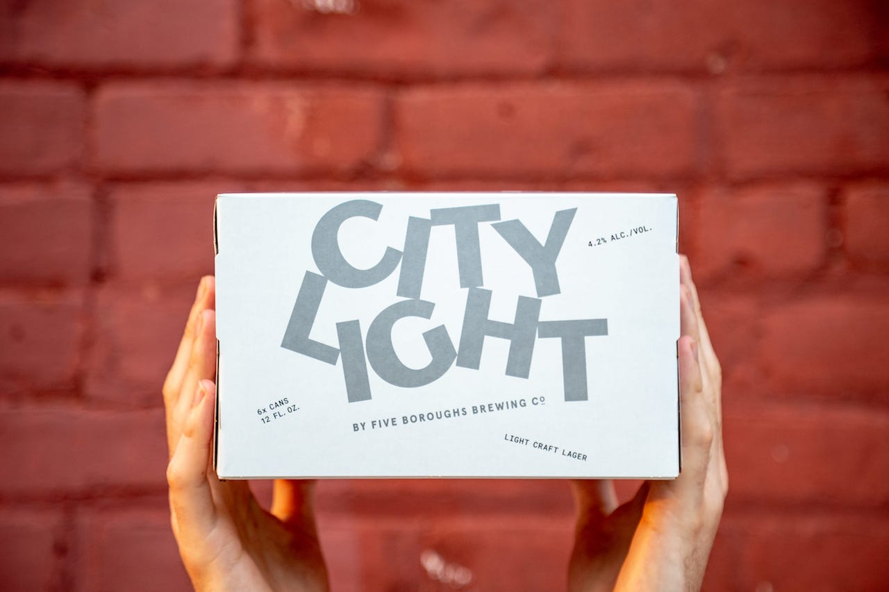
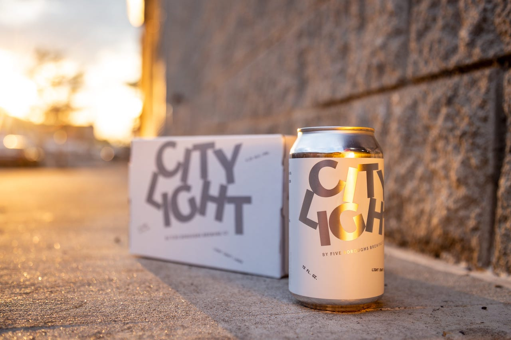
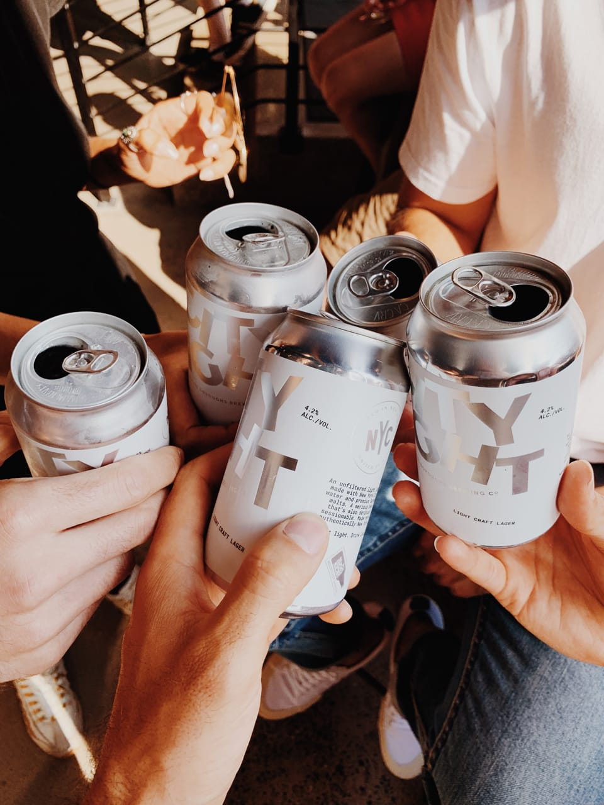

Five Boroughs Brewing Co. Makes craft beer that brings New York City together.
Are you over 21?
YES
NO
You must be of legal drinking age to join us. Sorry, kids.
Beer Bulletins are penned by Nick Griffin, Five Boroughs Brewing Co.’s Head of Brewing and Quality Management.
City Light is an unfiltered light craft lager making its debut in 2019. Brewed exclusively with premium German malts and Czech Saaz hops, City Light is a serious beer that’s also seriously sessionable.
ABV: 4.2%
Malts: Bohemian Pilsner
Hops: Czech Saaz
Since its inception, Five Boroughs has churned out a lot of delicious lagers. What does City Light add to the brewery’s diverse array of easy-drinking brews?
City Light is the easiest drinking of all our beers and is perfect for those times when you just want to sit back and have a couple. It was originally brewed as a small batch offering for our tasting room (mainly as a shift beer for our brewery workers) and it was well received so we decided to roll it out as a permanent option.
The Czech Saaz hop plays a starring role in City Light. What flavors and aromas does this noble varietal produce?
Saaz is a floral and grassy/herbal hop that is irreplaceable when brewing Czech style lagers. It has a unique spicy character that differentiates it from other hops and can also come off as citrusy at times. We add it multiple times in the kettle when brewing City Light, first as a wort addition and then just before the end of the boil.
What are some other notable characteristics of City Light?
In a beer this light all the components matter. In addition to Czech-grown Saaz hops, this beer showcases Bohemian pilsner malt and amazing NYC water. Bohemian pilsner malt is grown in the Czech Republic and malted in Germany. For such a low color malt it delivers amazing malt complexity, so we can squeeze as much flavor as possible into such a light beer. NYC water is among some of the best brewing water on the planet and its low mineral content is perfect for a beer of this style.
City Light is a light lager, a beer style most commonly associated with “Big Beer.” Talk about the burgeoning craft light lager movement and how beers like City Light are different than traditional macro options.
Almost all macro/ “big beer” lagers are brewed with a large portion of adjuncts — things like corn, rice and syrups. City Light and many other (but not all) craft alternatives are brewed with an all-malt base and many are hopped at higher rates as well. With City Light we chose to not utilize adjuncts and instead brew a beer with the highest quality products we could get our hands on, all with the intention of brewing the best and most flavorful beer possible.
Appearance: Straw gold with a slight haze. City Light, like all our beers, is not filtered or fined.
Aroma: Floral, fresh cut grass, sweet malt.
Taste: Spicy Saaz hops followed up with light malt. Finishes up with a nice punch of clean bitterness.
Mouthfeel: Light with a moderate amount of carbonation.
Food Pairings: Grilled anything, pizza and wings, you get the picture.